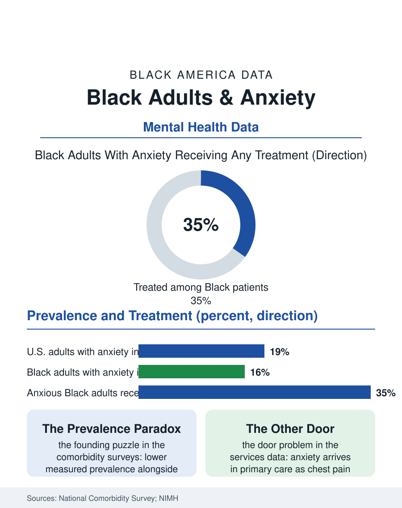

Black Public Health
Counting the Weight: Black Adults and Anxiety
Measured anxiety prevalence runs lower among Black adults while severity and untreated duration run higher, a paradox of supports, stigma, and symptom dialects. The anxiety file.

Anxiety disorders are the most common mental illnesses in the United States, affecting roughly a fifth of adults in any year by the national survey estimates, and the Black experience of them inverts the usual pattern in this atlas: measured prevalence runs somewhat below white rates, while severity, persistence, and the share of cases that are disabling run above. This article reads the anxiety file, a study in the distance between having symptoms and having them counted, named, and treated.
The Prevalence Paradox
The national comorbidity surveys return the file's founding puzzle. Black respondents report lower lifetime rates of most anxiety disorders than white respondents, a finding replicated across survey generations, while reporting, in the same instruments, higher exposure to the stressors the disorders grow from: financial precarity, discrimination events, neighborhood violence exposure, and caregiving load. The interpretations in the literature run in several directions at once, and the honest file holds them together: protective factors with real evidence behind them, religious participation, kin network density, and cultural frameworks that normalize endurance; measurement factors, instruments normed on other populations' symptom vocabularies, stigma-driven underreporting in interview settings, and the somatic dialect, anxiety presenting as the body, headaches, stomach, the heart, in a medical system that files the body separately; and a severity sorting effect, in which milder cases are absorbed by the community's supports and only the heaviest cases surface in the counts, consistent with the finding that when Black respondents do meet criteria, their disorders are more often chronic and impairing. The diagnosis pathway in clinical settings adds its own distortion, documented in the psychiatric literature: Black patients presenting with anxiety are at risk of having the presentation read through other categories entirely, a misreading that delays the anxiolytic, therapeutic, and behavioral treatments that work.
Treatment's Two Doors
The treatment file splits by door. The medication and therapy mainstream reaches Black anxiety patients at the lowest rates of any major group in the services data, for the mental health file's standing reasons: workforce composition, insurance networks thin where Black patients live, cost, and a justified historical skepticism toward psychiatric systems. The other door is the primary care and emergency system, where anxiety arrives as chest pain ruled cardiac-negative, as the gastrointestinal workup, as the sleep complaint, treated symptomatically for years in the chart without the diagnosis being assembled, an expensive and unsatisfying pattern the integrated care literature was built to interrupt. The interventions with the strongest evidence are unglamorous and deliverable: cognitive behavioral therapy, whose protocols translate across telehealth, the channel whose Black utilization the telehealth file counts; collaborative care models embedding behavioral health in primary care, which the trials show closing racial treatment gaps more reliably than referral models; and the community layer, where the church and the kin network already function as the first-line support system, and where mental health first aid and clergy training programs formalize the handoff from the pew to the clinic for the cases endurance cannot carry. The substance file intersects: alcohol and cannabis used as anxiolytics appear in the surveys as self-management strategies whose costs compound the disorder, and treatment that ignores them fails the patients who use both doors.
The Weather Inside
The file's research frontier is the stress physiology itself: the weathering literature's argument that chronic stress load, including the vigilance that discrimination imposes, registers in the body as accelerated wear, links the anxiety file to the hypertension, diabetes, and aging files that surround it in this atlas, making anxiety not merely a condition alongside the others but one of the mechanisms connecting the social data to the clinical. The generational chapter is the hopeful one. Survey data on attitudes show younger Black Americans endorsing therapy, naming anxiety in its own vocabulary, and seeking treatment at rates their grandparents' generation did not approach, a cultural shift visible in the workforce data too, as Black therapists, though still a small share of the profession, grow in number and in public presence. The school layer matters here as everywhere: childhood anxiety, the most treatable form, is identified in Black children at rates the school data show lagging, routed too often into the discipline file instead of the counselor's office. The anxiety file closes on its founding paradox, which the newest survey generations may finally dissolve. A population can be simultaneously more resilient and more burdened, protected at the level of prevalence and exposed at the level of severity, and a counting system that only asks whether the disorder is present will miss the population whose disorders, when present, are the least treated and the longest carried. Count the weight, this file instructs, not just the weather.
More in Black Public Health
Hypertension Among Black Adults: Prevalence, Control, and Consequences
About 55 percent of Black adults have hypertension — the highest rate of any U.S. group. Prevalence, onset, control, and the stroke, heart, and kidney consequences in the data.
Diabetes Among Black Adults: Prevalence and Complications
Nearly one in five Black adults has diabetes, diagnosed or undiagnosed — and its complications fall with particular weight. The CDC data on prevalence, control, and outcomes.
Black Life Expectancy: The Gap at Birth and Its Causes
Black life expectancy at birth is about 73 years, roughly five years below the national figure — the summary measure of every health gap in this section. The CDC data.
Source: National Institute of Mental Health statistics; National Comorbidity Survey Replication; Health Affairs and psychiatric services literature.